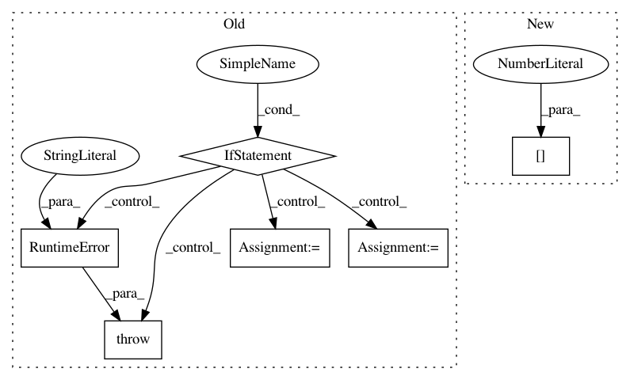

30efaaa572d798212c926e5b2edbf2b0fe7fa2f1,opennmt/decoders/rnn_decoder.py,AttentionalRNNDecoder,_get_initial_state,#AttentionalRNNDecoder#Any#Any#Any#,117
Before Change
def _get_initial_state(self, batch_size, dtype, initial_state=None):
// TODO: make this decoder eager-friendly.
if tf.executing_eagerly():
raise RuntimeError("Attention-based RNN decoder are currently not compatible "
"with eager execution")
initial_cell_state = super(AttentionalRNNDecoder, self)._get_initial_state(
batch_size, dtype, initial_state=initial_state)
attention_mechanism = self.attention_mechanism_class(
self.cell.output_size,
self.memory,
memory_sequence_length=self.memory_sequence_length,
dtype=self.memory.dtype)
if self.first_layer_attention:
self.cell.cells[0] = tfa.seq2seq.AttentionWrapper(
self.cell.cells[0],
attention_mechanism,
After Change
if initial_state is not None:
if self.first_layer_attention:
cell_state = list(decoder_state)
cell_state[0] = decoder_state[0].cell_state
cell_state = self.bridge(initial_state, cell_state)
cell_state[0] = decoder_state[0].clone(cell_state=cell_state[0])
decoder_state = tuple(cell_state)
In pattern: SUPERPATTERN
Frequency: 4
Non-data size: 6
Instances
Project Name: OpenNMT/OpenNMT-tf
Commit Name: 30efaaa572d798212c926e5b2edbf2b0fe7fa2f1
Time: 2019-07-15
Author: guillaume.klein@systrangroup.com
File Name: opennmt/decoders/rnn_decoder.py
Class Name: AttentionalRNNDecoder
Method Name: _get_initial_state
Project Name: biolab/orange3
Commit Name: 6432cffdcb6057b34c14c0b4787f0ae625fabe81
Time: 2017-03-31
Author: pavlin.g.p@gmail.com
File Name: Orange/widgets/visualize/owpythagoreanforest.py
Class Name: OWPythagoreanForest
Method Name: set_rf
Project Name: onnx/onnxmltools
Commit Name: 2eaf9bbdcb59c2c37127b29e47eccf36b3b8682a
Time: 2019-02-26
Author: wschin@outlook.com
File Name: onnxmltools/convert/coreml/operator_converters/neural_network/Crop.py
Class Name:
Method Name: convert_crop
Project Name: keras-team/keras
Commit Name: 365f621b24631a03f995e3b30e1800d327e42fc1
Time: 2017-04-24
Author: joshuarchin@gmail.com
File Name: keras/layers/recurrent.py
Class Name: Recurrent
Method Name: reset_states